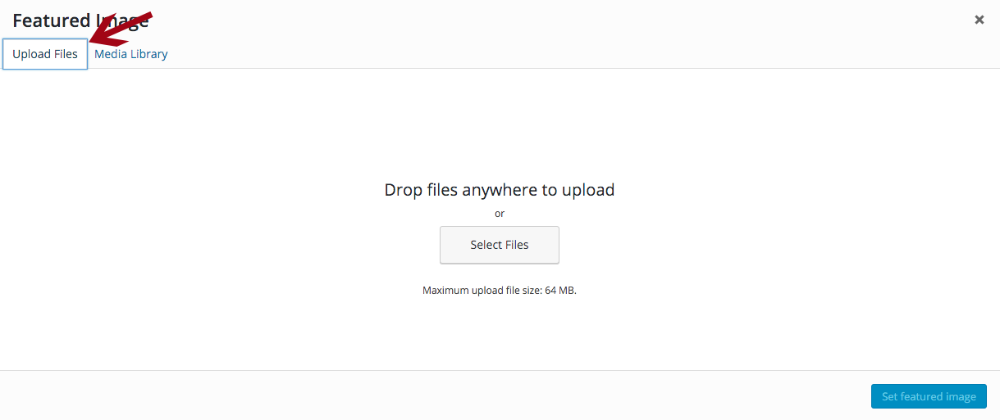

First you need to log in to the backend of your website.
I have created an account for you. You should have received an email from Wordpress containing your login information.
Once you have logged in, you'll be taken to your dashboard. From here you can update text, add a new wedding to your portfolio and upload images.
Starting from the top, here's how to add new photos to the image carousel:
In order to ensure that images appear correcly in the slider, you need to make sure the image is 1170px wide by 657px height
To optimise your website and make sure it runs as fast as possible, make sure you upload the correct image size. Uploading images that are too big will slow the site down.
Uploading images that are too small will product images that look pixelated and blurred.
To edit or delete an image in the carousel, just click on the title of the slider item, edit the image or text and click 'Save Changes'.
The testimonials are pulled through from the testimonial plugin. To edit these, you need to edit Testimonials.
Here's how to add new testimonials to the testimonials slider on your homepage:
For continuity, I would recommend keeping the information you enter for each testimonial consistent. In your current site, I have just included the Client's name.
How to edit an existing testimonial:
Here is also where you can quickly edit, delete and preview each testimonial.
Here's how to edit your Services and About page:
Here's how to add a new wedding to the gallery: